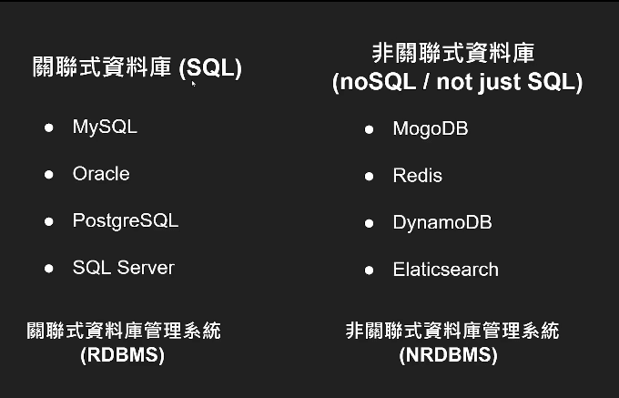

SQL server 笔记
安装&配置
SQL Server Management Studio 下载
https://learn.microsoft.com/zh-cn/sql/ssms/sql-server-management-studio-ssms?view=sql-server-ver16
2、库的新建
3、库的删除
4、库的分离&附加
移动
4、库的备份&还原
复制
SQL数据库中BAK文件的备份和还原_sql数据库备份为bak文件-CSDN博客
5、表的新建&修改
语法：
新建表
create 类型 名称
删除表
drop 类型 名称
修改
alter 类型 名称
修改数据字段名
exec sp_rename '表名.字段名','新字段名','column'
添加字段名
add 字段名 字段类型 default null
修改数据类型
alter colum 名称 新类型
查询表内字段列的信息
select 字段名 form 表名
1 | select FullName |
增
在已有表，添加数据
1 | insert into 表 values('[列]', '[列 2]'，......) |
新建表
1 | insert into 表([列], [列 2]) values(@内容 1,@内容 2) |
删
删除，筛选指定值的行
1 | delete from 表 where 列='列名' |
删除多行
1 | delete from 表 where 列 in('内容1','内容2') |
改
修改，筛选指定值的行
1 | update 表 set 列1='列名1',列2='列名2' |
修改第一行的字段内容
1 | update 表 set 字段名 =\'修改新内容\' where sysno = 1 |
查
获得指定列
1 | Select 列 from 表; |
筛选指定值
1 | select * from 表 where 列=值; |
其他：Text 类型
SELECT *FROM 表 WHERE CONVERT(VARCHAR, 列) = '值'
参考资料
触发器
微软手册
https://learn.microsoft.com/zh-cn/sql/sql-server/?view=sql-server-ver16
菜鸟教程
https://www.runoob.com/sql/sql-intro.html